ザガインヒル/ザガイン
SagainHill/Sagain
マンダレーから南西に車で小一時間程走るとエーヤワーディ川を渡るザガイン鉄橋にかかる。
そこから白いパゴダが林立する丘が見える。
ザガインヒルである。
雄大な川の畔に建つパゴダのその姿は幻想的ですらある。なーんてね。
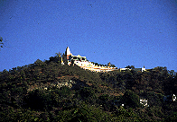
ザガインヒルの頂上付近にあるひときわカラフルなパゴダ。
ウーミントンゼーパゴダOoMinThoneSaiPagodaである。
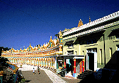 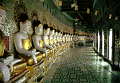  内側に弧を描くような形のカラフルな建物の内部には45体の仏像がズラ〜っと並んでいる。
手前の緑色の建物の中には何故か世界の大仏写真が飾られており、高岡大仏の写真なんかも飾られていた。
大仏マニアなのかも知れない。
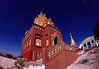 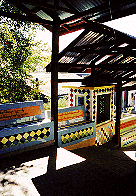
何故かこの辺（マンダレー近郊）のパゴダは西洋風のデザインの建物が多い、ような気がする。
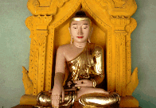
お〜い、水島〜ここにいたのかあ〜
と、いうわけでビルマの竪琴主演男優中井貴一仏を発見。
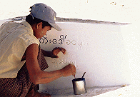
寄進者の名前を延々と書き続ける少年。
彼がこの仕事を完了する日が来るのだろうか。
内側に弧を描くような形のカラフルな建物の内部には45体の仏像がズラ〜っと並んでいる。
手前の緑色の建物の中には何故か世界の大仏写真が飾られており、高岡大仏の写真なんかも飾られていた。
大仏マニアなのかも知れない。
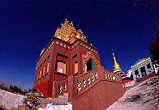 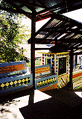
何故かこの辺（マンダレー近郊）のパゴダは西洋風のデザインの建物が多い、ような気がする。
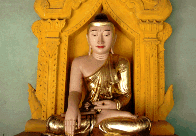
お〜い、水島〜ここにいたのかあ〜
と、いうわけでビルマの竪琴主演男優中井貴一仏を発見。
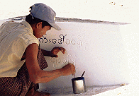
寄進者の名前を延々と書き続ける少年。
彼がこの仕事を完了する日が来るのだろうか。
今度は頂上のサンウーポンニャーシンパゴダSwanOoPonNyaShinPagodaへ。
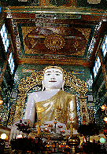  まずはでかい大仏さんに御挨拶。
このクラスの大仏さんはあちこちにゴロゴロいるので些程驚かなくなっている。
そんな自分に気がつき、愕然。
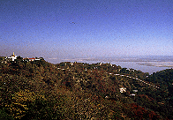 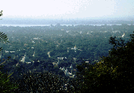
ここのテラスからの眺め。絶景。
空と川と緑以外はパゴダしかないといっても過言ではない。
ああ、極楽浄土ここにあり。
まずはでかい大仏さんに御挨拶。
このクラスの大仏さんはあちこちにゴロゴロいるので些程驚かなくなっている。
そんな自分に気がつき、愕然。
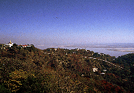 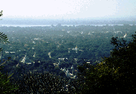
ここのテラスからの眺め。絶景。
空と川と緑以外はパゴダしかないといっても過言ではない。
ああ、極楽浄土ここにあり。
 テラスで放生する鳥を売っていたおばちゃん。
得体の知れない鳥を次から次へと出してくる。
梟とか大丈夫か？
テラスで放生する鳥を売っていたおばちゃん。
得体の知れない鳥を次から次へと出してくる。
梟とか大丈夫か？
今度はザガインヒルから10キロほど離れたカウンムードパゴダKaungMudawPagodaへ。
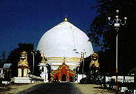
こんなです。
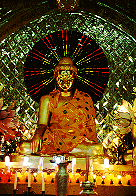
パチンコ台の様な光背。もちろん模様は刻々変化。ミャンマーでは良く見る。
こんなのに慣れてしまって、日本に帰って社会復帰出来るのだろうか。
少し心配。
 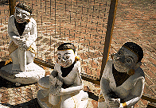
この辺はタナカというオシロイのようなものの原料の木の名産地。
左、タナカ売りのお嬢さん。
右、その友達、トン吉、チン平、カン太。
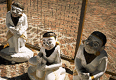
この辺はタナカというオシロイのようなものの原料の木の名産地。
左、タナカ売りのお嬢さん。
右、その友達、トン吉、チン平、カン太。
次はモンユアだ！
ミャンマーパゴダ列伝のページへ
珍寺大道場 HOME